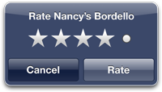

Share, Rate and Review
ORBIS is the must have; the swiss army knife of food & bar discovery apps necessary in your arsenal of application wonderment. The Orbis experience includes a whole host of exciting features, enabling a richer, more intuitive way to discover Newcastle's hidden gems. Reviewing bars, restaurants and all of your local hang-outs and has never been so easy.
Rate and review that bouncing club vibe you experienced last Tuesday, or casually speak words of wisdom about that mellow ale you embraced by the quayside.

My Places
HAVING found that heart warming italian bistro you love so much, why not bookmark it under 'My Places'. Giving you quick access to your favourite places, all in one, easy-to-use application. its so easy! Share them with friends or re-discover that crunchy BLT sandwich you loved so much at your favourite eatery.
Timeline
TIMELINE is the gateway to finding out what your friends really think about that amazing venue you suggested. Their ratings, bookmarks and reviews give you the information you need to find that perfect spot. Whether it's on the high street or down the charming backstreets of one of the UK's most popular cities you'll find that secret, independant, and brilliant place that only the locals know about.
Trending Spots
Having opened your Orbis app, you will be greeted by a host of top trending places, rated by fellow Orbis users who really know those bouncing hotspots located in the heart of the city. With just one touch, you will be whisked off to a page filled with information that will blow your mind so that next time you come to choose a place to eat, you can make an informed decision. Yes, you read that right, informed.